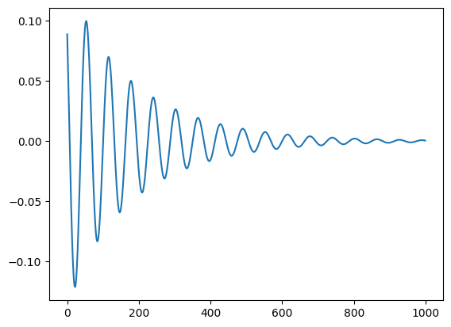

数字孪生脑仿真简单示例#
创建动力学模型#
from zjb.main.api import DynamicsModel
# 使用内建的SupHopf模型
dynamics = DynamicsModel.from_name("SupHopf")
创建/导入图谱#
from zjb.main.api import Atlas
# 虚构一个具有100分区的图谱
atlas = Atlas(labels=[f"{i}" for i in range(100)])
创建数字孪生脑模型#
创建监测器#
from zjb.main.api import Raw
# 使用Raw监测器输出变量x
monitor = Raw(expression="x")
from zjb.main.api import DTBModel
model = DTBModel(atlas=atlas, dynamics=dynamics, monitors=[monitor])
# 设置状态变量初值
model.states = {
"x": 0.1,
"y": 0.1
}
# 设置非默认的动力学参数
model.parameters = {
"a": -0.1
}
# 设置默认仿真时间为100(默认值1000)
model.t = 100
创建被试#
导入结构连接#
from zjb.main.data.correlation import StructuralConnectivity
import numpy as np
import io
buffer = io.BytesIO()
# 随机生成一个结构连接(仅用于示例)
np.save(buffer, np.random.rand(100, 100) / 10)
buffer.seek(0)
# 从文件导入一个结构连接
conn = StructuralConnectivity.from_npy(buffer, atlas.space)
from zjb.main.api import Subject
subject = Subject()
# 存入结构连接到被试数据
subject.data |= {"SC": conn}
创建数字孪生脑#
from zjb.main.api import DTB
dtb = DTB(subject=subject, model=model, connectivity=subject.data["SC"])
运行数字孪生脑仿真#
result = dtb.simulate()
查看仿真结果#
from matplotlib import pyplot as plt
# [0]对应第一个监测器的结果
ts = result.data[0]
plt.plot(ts.data[:, 0])
plt.show()
